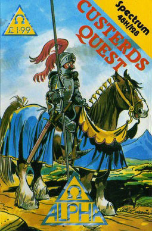
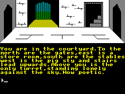

Custerds Quest


{kind=link}

| Publisher: | The Power House |
| Price: | £1.99 |
| Year: | 1986 |
| Source: | CRASH, Issue 44 |

The Power House budget label is new to adventures. Their inlays come complete with programmer profiles and mug shots (Craig Davies, rather knowingly, has dark specs on), and a Power Mouse whose body is composed of a hair dryer atop the innards of a vacuum cleaner.
Completing the design are two potato heads who say ‘Yowzer! Brilltoid! All music by House Electronic Xperience’. And you could use such words to describe Custerds Quest — for the paltry price it certainly is a super jocular jaunt through the idiosyncrasies of adventure. Many adventure conventions and quirks get the Craig Davies treatment in a thoroughly enjoyable way.

hadn’t noticed, at this deadpan point in
the satiric Custerds Quest
Sir Coward de Custerd is the name, and I’m not quite sure what’s the game, but I do know that much can be achieved in this adventure — the humour is in the feel of the gameplay and doesn’t seriously affect the outcome.
The opening scene sets you in the Great Ancestral Hall of Castle Custerd. There are about 15 locations in the castle itself, where you can pick up the essentials for any knight, and countless sites beyond which even include a subadventure opening out beyond a bedroom cupboard! In this area, as in so much of the adventure, the subtle writing style and competence of the prompts and EXAMINE reports give the game a winning edge.
For those who enjoy simpler distractions, the pictures aren’t bad for a budget adventure, and they’re drawn reasonably quickly. In the text, also, there’s good use of coloured highlights to break up the blocks of print in a most attractive manner.
As always with funnies, giving too many examples might lessen the impact of the game — so let’s just look at a few small clips from Custerds Quest.
In the castle there’s a storeroom with an Inconsequential Stone Panel. EXAM PANEL, of course, gives ‘It’s inconsequential! Can’t you read? Or perhaps it’s because you can’t understand the meaning of the word but ploughed on relentlessly? Anyway it’s a floor panel. Why not give it a kick?’.
Getting into the swing of the adventure, you naturally give it a kick, which results in the following funny: ‘You give the panel a hefty kick which shatters a few toes. You do a dance around the room with your foot held in your hand uttering curses which would shock your granny. You really are too gullable! Alright, try tapping it.’
With wary cynicism you now tap the so-called Inconsequential Panel: ‘You start tapping. Time drags on. Various cuddly woodland animals gather at the door, watching you intently as your face plunges into deeper shades of crimson. Suddenly and without warning, the panel opens and you fall head first into the room below.’
And there’s a classic joke if you return later and try to skip a stage by going direct to TAP PANEL. This gives: ‘Rule 186:f. The player must first kick the panel before tapping it.’ It shows an empathy with the travails of the weary adventurer, worn down by too many long.winded solution pathways in unfriendly games.
Custerds Quest is a very funny and sharp-humoured game, deriving great pleasure from taking every adventure etiquette and turning it on its head for the amusement of the jaded adventurer. For my money this is better than many others that have attempted the same kind of lampooning; Custerds Quest is exceptionally well-written in an engagingly chatty, witty style. Super stuff.
COMMENTS
| Difficulty: | Informative prompts make the going easy |
| Graphics: | Quite good |
| Presentation: | Neat |
| Input Facility: | Verb/Noun |
| Response: | Fast Quill response |
| General rating: | Very funny indeed |
| Atmosphere: | 90% |
| Vocabulary: | 89% |
| Logic: | 88% |
| Addictive qualities: | 90% |
| Overall: | 90% |